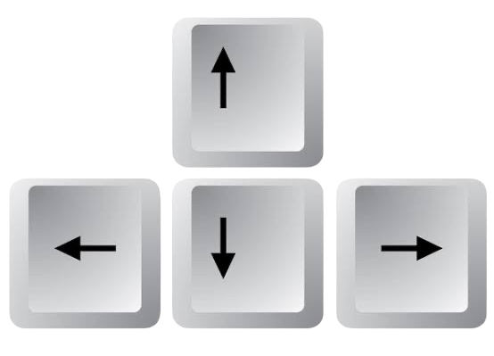

El Snake (a veces también llamado serpiente) es un videojuego clássico lanzado a mediados de la década de 1970. Para jugar usa las flechas del teclado:
Come la manzana para hacer crecer la serpiente. Si la cabeza de la serpiente toca otra parte del cuerpo, se acaba el juego. ¡Buena suerte!